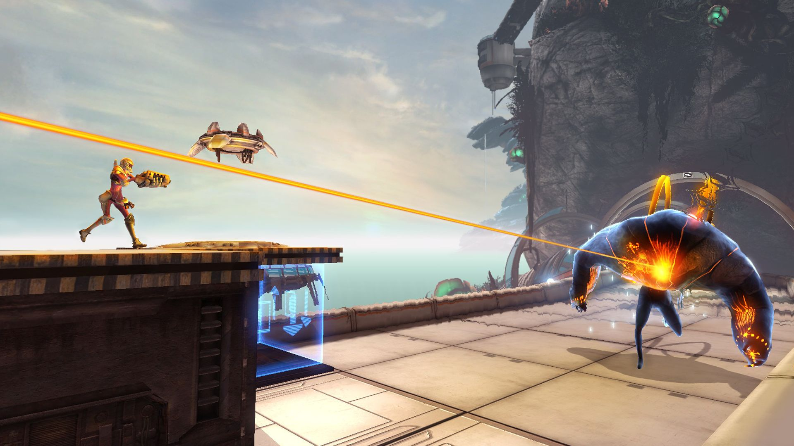
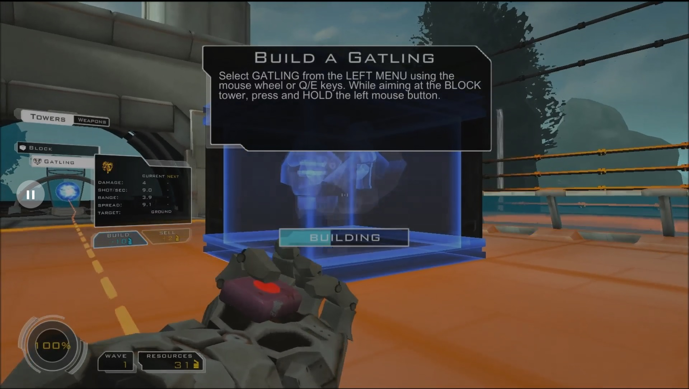
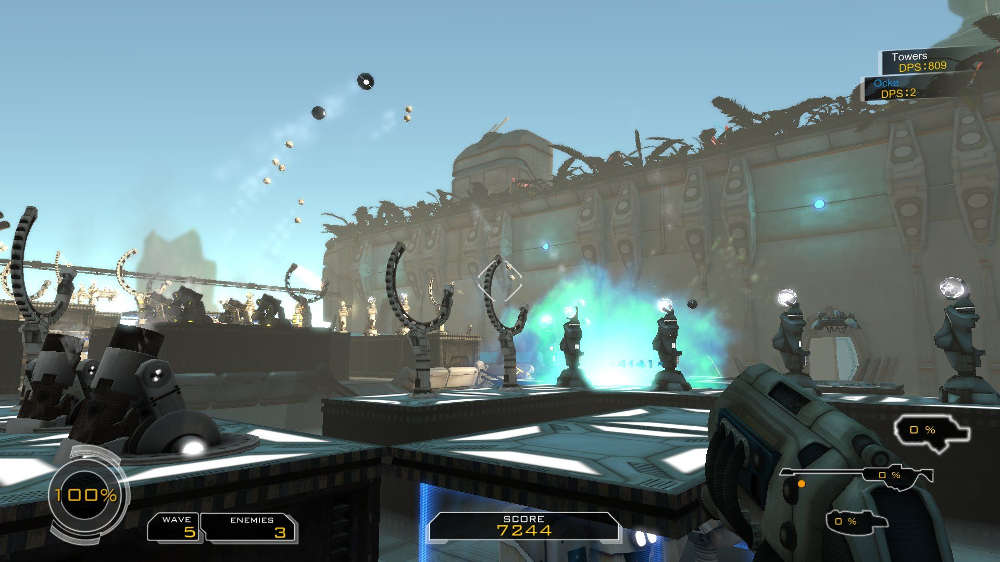

The first game by Coffee Stain Studios, Sanctum combined elements of Tower Defense and First Person Shooters into an unusual genre hybrid. I joined development for the last months before release, leaving after the game was finished to use it in a study for my Bachelor's thesis.

My main responsibility on Sanctum was testing and overseeing focus tests, especially of the game's multiplayer mode. I also took up several other tasks and worked on the tutorial, level introductions and tweaks and some level design prototyping. After the release I also collected feedback from the community for further troubleshooting and development.

Sanctum was a success and spawned several map packs for the original game as well as a more ambitious sequel. The legacy of the first person building gameplay can also be seen in Coffee Stain Studios' recently announced game Satisfactory.
